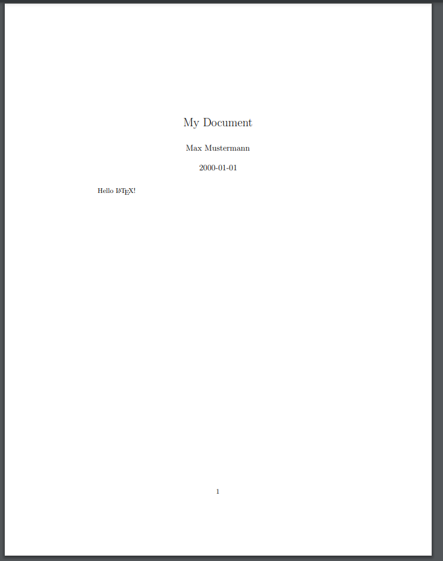
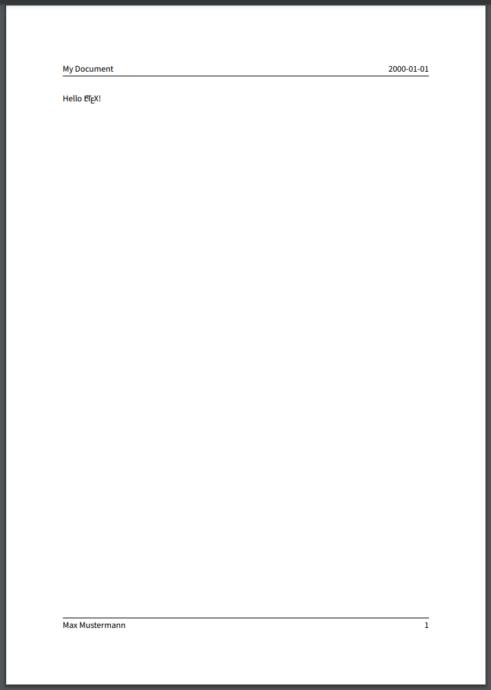
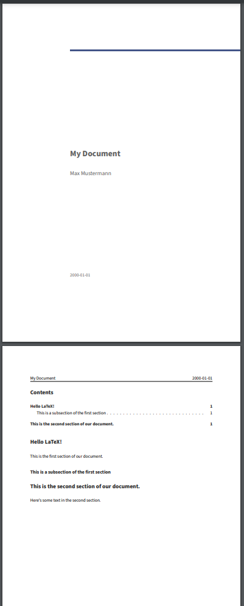
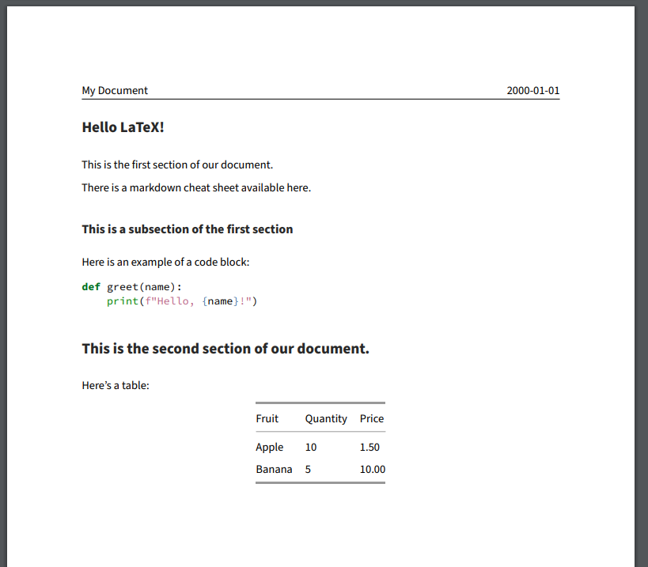
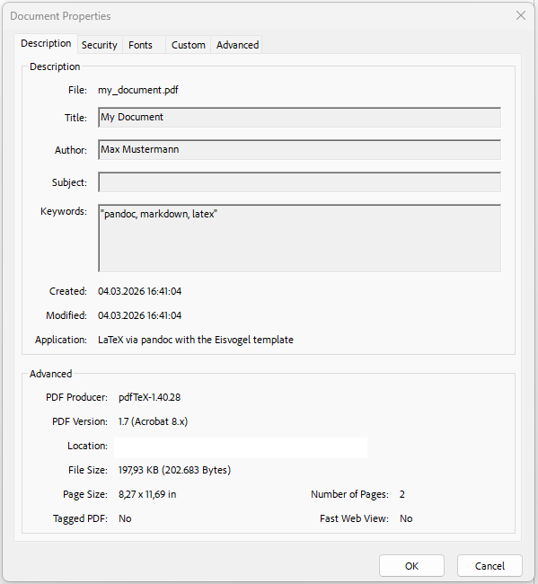

Pandoc
Last updated on 2026-03-10 | Edit this page
Estimated time: 12 minutes
Overview
Questions
- What is Pandoc and how does it relate to Markdown and LaTeX?
- How can we use Pandoc to convert Markdown files into PDF files?
Objectives
- Use Pandoc to convert Markdown files into different formats
Pandoc
Pandoc is a “universal document converter” run on the command line to convert files from one format to another. It can handle a wide variety of input and output formats, including more simple formats like Markdown and HTML, as well as more complex formats like PDF and Microsoft Word. Depending on the format, pandoc can either convert from, to or both the input and output formats.
For our use case, Pandoc can be used to convert a Markdown file directly into a LaTeX file. This allows us to write our document in Markdown, which is easier to write and read than LaTeX, and then use Pandoc in our CI/CD pipeline to convert it into a PDF file that we can share with others.
Create a document in Markdown
We have our LaTeX document from a previous episode, but wouldn’t it
be nicer if we could write our document in a simpler format like
Markdown and then convert it? Let’s start by re-creating our simple
LaTeX document in Markdown. Create a file called
my_document.md and add the following content:
Next let’s create a job that uses Pandoc to convert this Markdown file into a PDF. We can use the “build” stage again, since this job is independent from our earlier build job that builds our LaTeX document, but note two things:
- We are using a different Docker image that contains some additional
packages and templates called
pandoc/extra. - We need to change the job name to something different than
build-jobsince we already have a job with that name.
YAML
build-job-pandoc: # This job runs in the build stage, which runs first.
stage: build
image:
name: pandoc/latex:latest # Use a TeX Live image that contains LaTeX
entrypoint: [""] # Override the default entrypoint
script:
- echo "Generating PDF from Markdown source..."
- pandoc my_document.md --output my_document.pdf # Convert with pandoc
- echo "PDF generation complete."
- ls -a
artifacts:
paths:
- my_document.pdfThen let’s also update our pages job to also publish the PDF file that we just generated:
YAML
pages:
stage: deploy
script:
- echo "Deploying to GitLab Pages..."
- mkdir -p public # Create the public directory if it doesn't exist
- mv main.pdf public/ # Move the generated PDF file to public
- mv my_document.pdf public/ # Move the presentation.pdf file to public
- mv README.md public/ # Move the README.md file to public
- mv index.html public/ # Move the index.html file to public
artifacts:
paths:
- public # Save the public directory as an artifactYou can of course, also just move all the files in the current
directory to the public directory with the command
mv * public/. This would be more concise, but would also
move any other files that we might have in the directory, which we might
not want to publish.
We could get around this by either setting the output of our pandoc commands to be in either the public directory or a separate directory that we then move to the public directory.
After the pipeline runs, you should be able to access the PDF via the pages url for your project. It should look somehing like this:

Note that Pandoc did a pretty good job converting our Markdown file -
the metadata in our YAML front matter has been used to create a title
section. We even still got to use the \LaTeX command to get
the LaTeX logo. However the overal pdf is somewhat plain looking.
Applying a Template to the Document
The PDF file generated by Pandoc from the Markdown source file is a
little plain. We can apply a template to the document to alter the
output style. Pandoc supports a variety of templates that we can specify
using the --template option when we run the
pandoc command.
We will also need use a different Docker image that contains some
additional packages and templates called pandoc/extra.
Let’s update our build-job-pandoc to use this image and to
apply the eisvogel template to our document:
YAML
build-job-pandoc: # This job runs in the build stage, which runs first.
stage: build
image:
name: pandoc/extra:latest # Use the Official Pandoc image
entrypoint: [""] # Override the default entrypoint
script:
- echo "Generating PDF from Markdown source..."
- pandoc my_document.md --output my_document.pdf --template eisvogel # Convert with pandoc
- echo "PDF generation complete."
- ls -a
artifacts:
paths:
- my_document.pdfAfter the pipeline runs, you should be able to access the PDF via the pages url for your project. The output should look something like this:

It’s still a little plain, but the template has modified the general appearance of our metadata, adding a header and footer section, with our content in the middle.
Adding Additional Metadata
At the moment we’ve only defined the title, author and date in our metadata, but EisVogel can parse additional fields to customize the appearance of the final document. Let’s add some more data to our YAML front matter and include some sections in our content
MARKDOWN
---
title: "My Document"
author: "Max Mustermann"
date: "2000-01-01"
titlepage: true
toc: true
toc-own-page: true
---
# Hello LaTeX!
This is the first section of our document.
## This is a subsection of the first section
# This is the second section of our document.
Here's some text in the second section.Run the pipeline again and see how the output has changed:

Without touching anything other than the contents of the markdown file, we have a nicely formatted PDF document with a title page and a table of contents!
Challenge 1: Add some additional content to the Markdown file.
Add some additional content to the my_document.md file,
e.g. add a new section with some text. Try adding some additional
markdown elements, like links, tables, and code blocks.
(You can reference this Markdown Cheat Sheet for ideas.)
Run the pipeline again and see how the output has changed.
There’s no real right answer, but here’s an example of what you might
have added to your my_document.md file:
MARKDOWN
---
title: "My Document"
author: "Max Mustermann"
date: "2000-01-01"
titlepage: true
toc: true
toc-own-page: true
---
# Hello LaTeX!
This is the first section of our document.
There is a markdown cheat sheet available [here](https://www.markdownguide.org/cheat-sheet/).
## This is a subsection of the first section
Here is an example of a code block:
```python
def greet(name):
print(f"Hello, {name}!")
```
# This is the second section of our document.
Here's a table:
| Fruit | Quantity | Price |
|--------|----------|-------|
| Apple | 10 | 1.50 |
| Banana | 5 | 10.00 |And it might end up looking something like this:

Note the syntax highlighting in the code block and the formatting of the table!
Challenge 2: Pandoc Variables
Pandoc supports a variety of variables that can be used to customize the output of the document that we can add to the YAML front matter of our Markdown file. Check out the pandoc documentation and try a few variables to see how they affect the output:
Again, there’s no one right answer, but a couple things to try out:
MARKDOWN
---
title: "My Document"
author: "Max Mustermann"
date: "2000-01-01"
titlepage: true
toc: true
subtitle: "This is a subtitle"
abstract: "This is an abstract of the document."
keywords: ["pandoc", "markdown", "latex"]
hyperrefoptions:
- linktoc=all
colorlinks: true
---If you tried the “keywords” variable, you might wonder what this actually does, since it doesn’t seem to have any effect on the output. The “keywords” variable is actually used to add metadata to the PDF file that can be read by PDF readers. If you open the PDF file in a PDF reader and look at the document properties, you should see the keywords that you added:

Challenge 3: Add another File Output Type
We’ve just done markdown to PDF, but Pandoc can convert to a variety
of different formats. Try adding a line to your
build-job-pandoc job to also convert the markdown file into
a different format, e.g. HTML or Microsoft Word.
build-job-pandoc: # This job runs in the build stage, which runs first. stage: build image: name: pandoc/extra:latest # Use the Official Pandoc image entrypoint: [“”] # Override the default entrypoint script: - echo “Generating PDF from Markdown source…” - pandoc my_document.md –output my_document.pdf –template eisvogel # Convert with pandoc - pandoc my_document.md –output my_document.html # Convert to HTML with pandoc - pandoc my_document.md –output my_document.docx # Convert to Word with pandoc - echo “PDF generation complete.” - ls -a artifacts: paths: - my_document.pdf
- We can use Pandoc to convert Markdown files into different formats, including PDF files.
- We can apply templates to our Pandoc documents to customize the appearance of the output.